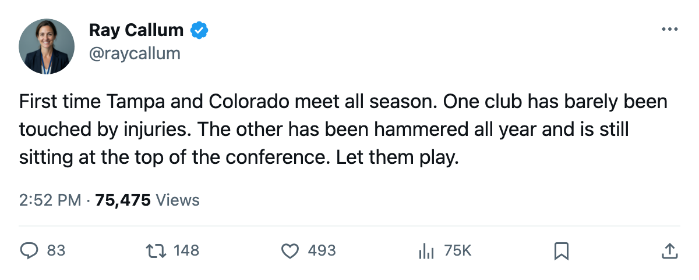
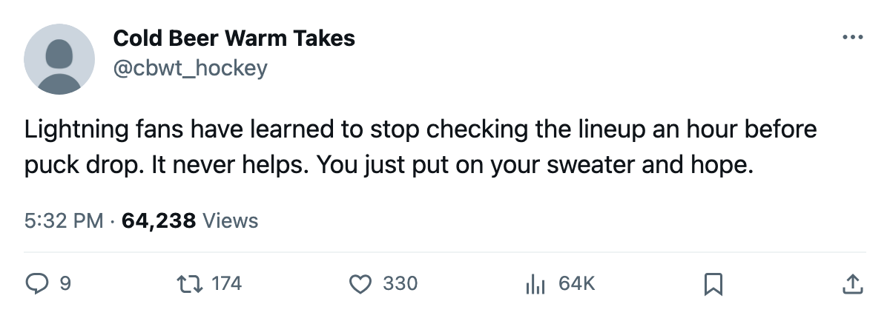

First Meeting: Tampa Bay and Colorado have not played, and the table says this much
The league's healthiest club visits the league's most battered, both inside the top three of their conferences
 Ray CallumSenior correspondent · Home Ice Network
Ray CallumSenior correspondent · Home Ice Network
 Tampa Bay Lightning hosts
Tampa Bay Lightning hosts  Colorado Avalanche tonight for the first meeting between these clubs this season.
Colorado Avalanche tonight for the first meeting between these clubs this season.
Colorado Avalanche has lost 86 days to injury, the fewest in the league. Tampa Bay Lightning has lost 579, the most, across 45 injury spells.  Vincent Lecavalier90 (leg, April 1), Bill Lindsay74 (concussion, March 11),
Vincent Lecavalier90 (leg, April 1), Bill Lindsay74 (concussion, March 11),  Tim Taylor70 (hip, March 13) and
Tim Taylor70 (hip, March 13) and  Francis Bouillon76 (leg, April 25) are all out for the Lightning tonight.
Francis Bouillon76 (leg, April 25) are all out for the Lightning tonight.
Colorado Avalanche sits 2nd in the West at 87 points, tied with  Dallas Stars, with 257 goals for, the second most in the league behind
Dallas Stars, with 257 goals for, the second most in the league behind  Toronto Maple Leafs's 325. Tampa Bay Lightning is 3rd in the East at 90 points. Both are L1 tonight. Colorado Avalanche dropped a 3-2 overtime decision at
Toronto Maple Leafs's 325. Tampa Bay Lightning is 3rd in the East at 90 points. Both are L1 tonight. Colorado Avalanche dropped a 3-2 overtime decision at  Florida Panthers on March 5, one of two overtime losses in a 10-game stretch that produced 8 wins and no regulation defeat. Tampa Bay Lightning lost 3-1 at
Florida Panthers on March 5, one of two overtime losses in a 10-game stretch that produced 8 wins and no regulation defeat. Tampa Bay Lightning lost 3-1 at  Detroit Red Wings the same night, snapping a 7-game winning streak.
Detroit Red Wings the same night, snapping a 7-game winning streak.
Both goalies have carried the load
 Jamie Storr84 has played 56 of Colorado Avalanche's 66 games.
Jamie Storr84 has played 56 of Colorado Avalanche's 66 games.  Nikolai Khabibulin92 has played 56 of Tampa Bay Lightning's 67. Neither has been rested much.
Nikolai Khabibulin92 has played 56 of Tampa Bay Lightning's 67. Neither has been rested much.
The table says Tampa Bay Lightning is 22-11 at home. Colorado Avalanche is 22-10 on the road. Tonight puts the West's most productive offense against a Lightning club that is missing its top center, two bottom-six forwards and a defenseman, with four names still on the injured list past today.
Neither club has a read on the other. This series is 0-0-0.

